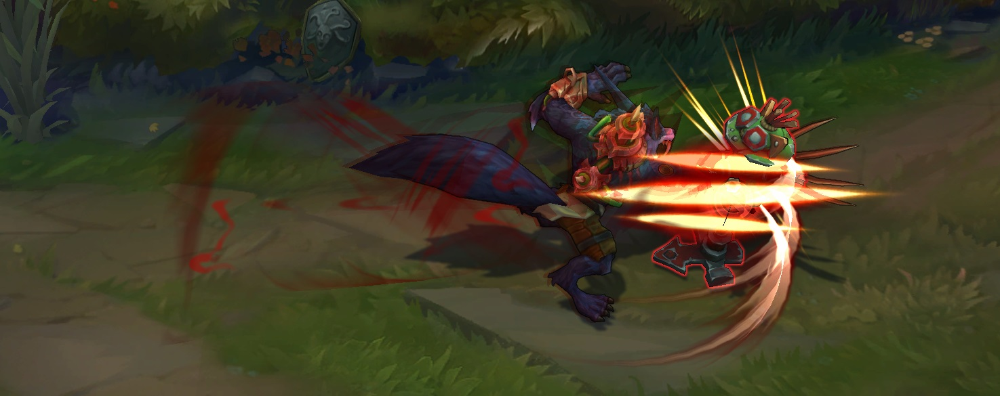
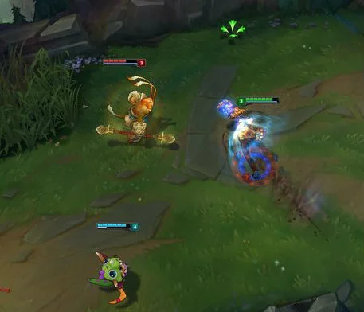
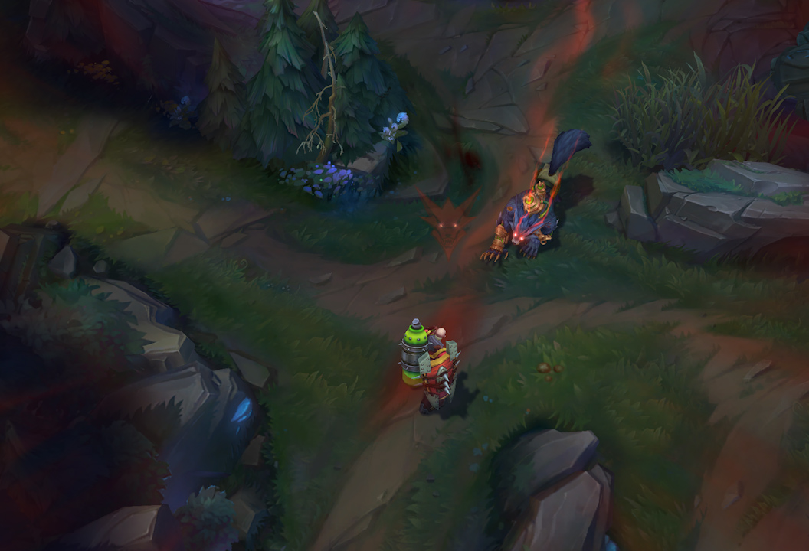
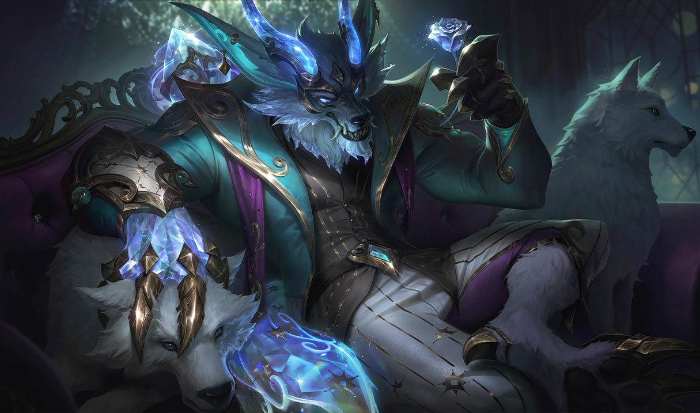

Warwick - Tipps & Tricks
Die besten Tipps, um Warwick zu meistern
Hier sind einige wertvolle Tipps, die dir helfen, Warwick im Spiel effektiv zu spielen und deine Gegner zu dominieren.
1. Jungle-Start
Starte mit dem Buff, der auf deiner Seite des Jungles am nächsten liegt, um schnell an Erfahrung zu kommen und die Karte zu kontrollieren.
2. Ultimate gut timen
Warwicks Ultimate, Unstoppable Onslaught, ist perfekt, um Gegner zu jagen oder wichtige Ziele zu sichern. Achte auf niedrige Gegner und setze deine Ulti gezielt ein.
3. Ganken im richtigen Moment
Warwick eignet sich hervorragend für Ganks, vor allem in der frühen Spielphase. Achte darauf, deine W für zusätzliche Heilung und Beweglichkeit einzusetzen.
4. Nutzen der Passiven Fähigkeit
Warwicks passive Fähigkeit heilt ihn bei jedem Treffer gegen einen Gegner. Nutze dies, um im Kampf länger zu überleben und dich zu heilen, wenn du die Kontrolle über das Geschehen hast.
5. Vermeide frühe 1v1s
Warwick kann im frühen Spiel manchmal ein wenig schwach sein. Vermeide es, allein gegen starke Gegner zu kämpfen, bevor du einige deiner wichtigen Items gekauft hast.
